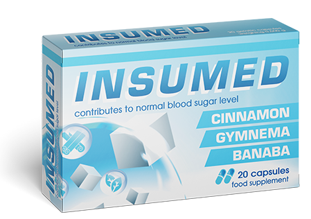

A legjobb készítmény a cukorbetegség ellen
Csökkenti a vércukor szintjét
Az -as év terméke
Az Európa vezető endokrinológusai által jóváhagyva
Insumed a cukorbetegség
legjobb kezelési módja
legjobb kezelési módja

Csökkenti a vércukor szintjét, segíti az inzulin felszívódását
Megelőzi a hipoglikémiát, erősíti az immunrendszert
Helyreállítja az anyagcserét

kedvezményes
ár:
ár:
A -as év endokrinológiai áttörése
Az első során kedvezményes áron juthat hozzá:
-50%
Új ár:
Régi ár: